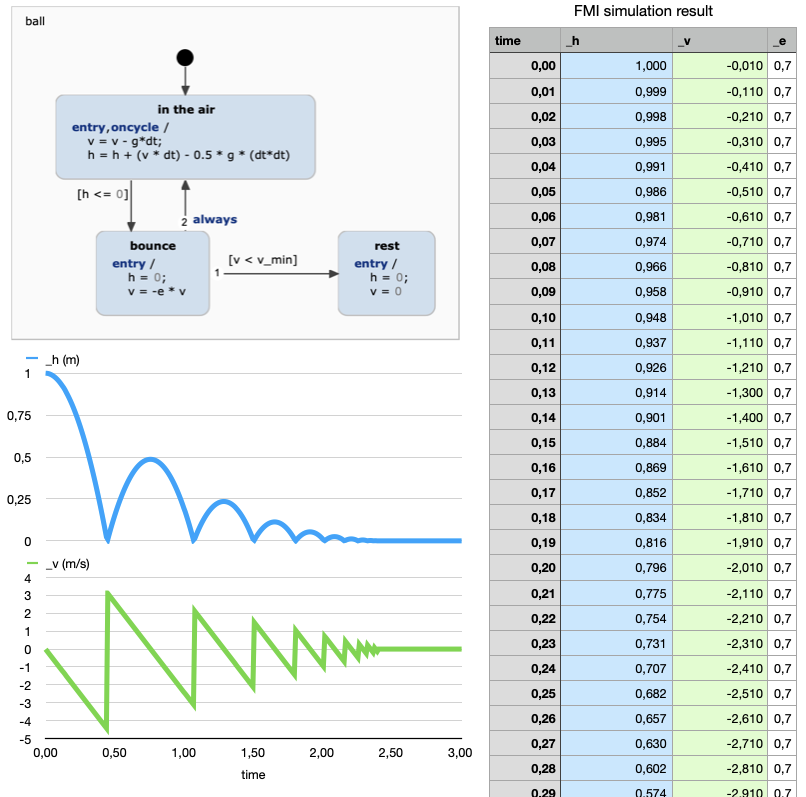

FMU Code Generation
This example demonstrates how to generate a Functional Mock-up Unit (FMU) from a statechart. For this we will use the example of a bouncing ball and calculate the height of the ball over time with the statechart.
The Functional Mock-up Interface (FMI) standard addresses the exchange and joint execution of models for co-simulation. It mainly is applied for system level simulation of complex systems. YAKINDU statecharts can be exported as *Functional Mock-up Units (FMUs)* and as such can participate in FMI based simulations. As FMUs provide binary executables and only bundle source code or models as an option FMUs can be provided to other parties without exposing intellectual property. Concretely, YAKINDU Statechart Tools supports FMI 2.0 for Co-Simulation FMU export. By the support of the FMI standard YAKINDU statecharts are interoperable with a wide range of simulation tools.

Generator Model
The FMU generator supports building FMUs for Windows, Linux and MacOS 64Bit platforms. The generator builds a complete FMU and relies on Eclipse C development infrastructure. So as a precondition you have to make sure that CDT features are installed. For Windows platform the Cygwin toolchain must be installed.
In order to generate code we need to specify which code generator to use and into which folder to generate. For this, we need to create a so-called generator model, which is already done for this project. To do so by yourself,
- Select the models folder in the Project Explorer
- Right-click and choose New -> Code generator model
- Follow the wizard to select the FMU code generator and the state machine for which you want to generate the FMU
The new generator model will look similar to this one:
The generator model defines where the code should be generated into by specifying the target project and target folders.
Invoking Code Generation
Code generation is usually invoked each time the statechart model is saved. This behavior can be disabled by unchecking the option Project -> Build Automatically. You can always manually invoke the code generation with Generate Code Artifacts in the context menu of the generator model.
Each time the FMU code is generated, CDT will build the project and create an FMU for you under the Debug folder. Copy this FMU file to deploy it to your FMI compatible simulation environment.
You can find more information on the FMU feature in our documentation.
The Example Application
As an example application we will use the 'BouncingBall' statechart to calculate the height of a ball which is dropped to the ground and then continues to bounce until a certain point in time.

Our statechart determines the height of the ball by taking the velocity of the ball and the gravitation into consideration. Also, with every bounce to the ground the velocity of the ball is reduced by a constant factor.